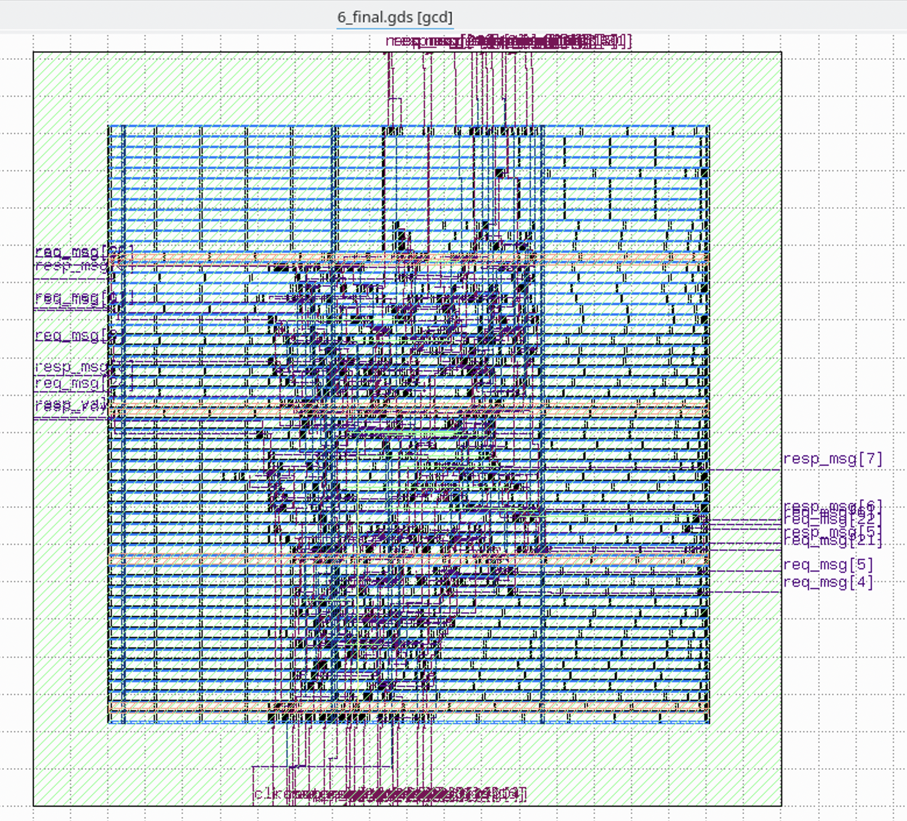
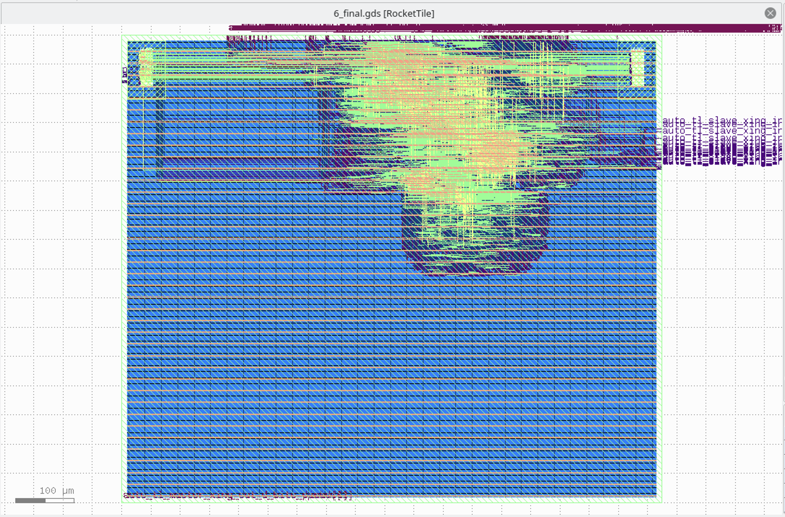

OpenROAD Flow 初尝试¶
背景¶
最近在尝试接触一些芯片前后端的知识。正好有现成的开源工具链 OpenROAD 来做这个事情，借此机会来学习一下整个流程。
尝试过程¶
首先 clone 仓库 OpenROAD-flow-scripts，然后运行：./build_openroad.sh，脚本会克隆一些仓库，自动进行编译。
编译中会找不到一些库，比如可能需要安装这些依赖：liblemon-dev libeigen3-dev libreadline-dev swig，此外运行的时候还需要 klayout 依赖。
如果遇到 cmake 找不到 LEMON 的问题，这是一个 BUG，可以运行下面的命令解决：
编译后整个目录大概有 4.8G，输出的二进制目录是 133M。
如果要跑一下样例里的 nangate45 工艺的 gcd 例子，运行：
分析 GCD 测例¶
这个测例的代码提供了这样一个接口：
module gcd
(
input wire clk,
input wire [ 31:0] req_msg,
output wire req_rdy,
input wire req_val,
input wire reset,
output wire [ 15:0] resp_msg,
input wire resp_rdy,
output wire resp_val
);
endmodule
从名字可以推断出，外部通过 req 发送请求到 GCD 模块，然后模块计算出 GCD 后再返回结果。
根据日志可以看到，从 verilog 到最终的 gds 文件，经过了这些步骤：
- 第一步用 yosys 综合（1_1_yosys），把 verilog 代码转化为网表，网表中的单元就是形如
NAND2_X1DFF_X1等这样由工艺库定义的一些单元。 - 第二步进行 floorplan（2_1_floorplan），规划出芯片的大小，逻辑放在哪个位置，输入输出引脚放在什么位置（2_2_floorplan_io），还要考虑 SRAM 等宏或者 IP（2_4_mplace），电源网络 PDN（2_6_floorplan_pdn）
- 第三步是 Placement，就是把前面得到的一些 cell 放到芯片上的 (x,y) 坐标上
- 第四步是 Clock Tree Synthesis（4_1_cts），简称 CTS，生成时钟树
- 第五步是进行路由连线，OpenROAD 有两个路由：FastRoute（5_1_fastroute）和 TritonRoute（5_2_TritonRoute）
- 第六步输出结果到 gds 文件（6_1_merge）。
这些步骤可以在仓库的 flow/Makefile 里面看得比较清晰，英文版摘抄如下：
- SYNTHESIS
- Run Synthesis using yosys
- FLOORPLAN
- Translate verilog to def
- IO Placement (random)
- Timing Driven Mixed Size Placement (tdms)
- Macro Placement
- Tapcell and Welltie insertion
- PDN generation
- PLACE
- Global placement without placed IOs, timing-driven, and routability-driven
- IO placement (non-random)
- Global placement with placed IOs, timing-driven, and routability-driven
- Resizing & Buffering
- Detail placement
- CTS(Clock Tree Synthesis)
- Run TritonCTS
- Filler cell insertion
- ROUTING
- Run global route (FastRoute)
- Run detailed route (TritonRoute)
最后生成的 gds，用 KLayout 打开，可以看到这个样子：

日志里可以看到，预测的总功耗是 1.71 mW，面积占用是 703 um^2。
还跑了一下其他样例设计的 gds，比如 ibex：

日志里可以看到，预测的总功耗是 10.1 mW，面积占用是 32176 um^2。
还有 tiny rocket：

日志里可以看到，预测的总功耗是 36.8 mW，面积占用是 52786 um^2。
工艺库常见术语¶
- slvt/lvt/rvt/hvt: super-low/low/regular/high V threshold 前者速度快：阈值电压低，同时漏电流大
- ss/tt/ff: slow-slow/typical-typical/fast-fast 后者速度快：电压高，温度低，比如 SS（0.99V 125C）TT（1.10V 25C）FF（1.21V -40C）；有时候还会看到 ssg，可以理解为 ss 的比较精确的版本，因此没有那么悲观，延迟比 SS 低一些，详见 STA | ssg 跟 ss corner 的区别——谬误更正版
- c + 数字：表示的是 channel length，c40 表示 40nm，数字越大速度越慢，能耗越低
- 数字+track：表示的是 track height，sc12 表示 12-track，数字越大速度越快
ARM 的文档 Choosing the physical IP libraries 描述了 Channel length, Track height, Voltage threshold 等不同的选择。
综合来说，如果要更低的延迟，选择低 vt，小 c 和大 track，反之如果要更低的能耗，选择高 vt，大 c 和 小 track。
CCS v.s. NLDM¶
由于物理的特性比较复杂，工艺库里描述的也只是一个大致的模型，刻画了这些 cell 的特性，那么自然可以选取不同的模型。NLDM（上面举的例子就是 NLDM）和 CCS 就是常见的两个模型，相比之下，CCS 更精确，同时参数更多。更精确的还有直接用 SPICE 描述的电路。详细的对比可以看下面的参考文档。
参考文档¶
- GETTING STARTED WITH OPENROAD APP – PART 1
- Advanced ASIC Chip Synthesis Using Synopsys® Design Compiler™ Physical Compiler™ and PrimeTime®
- Comparing NLDM And CCS delay models
- Introduction to Liberty : CCS, ECSM and NDLM
- STA 概念：一文了解 NLDM 与 CCS